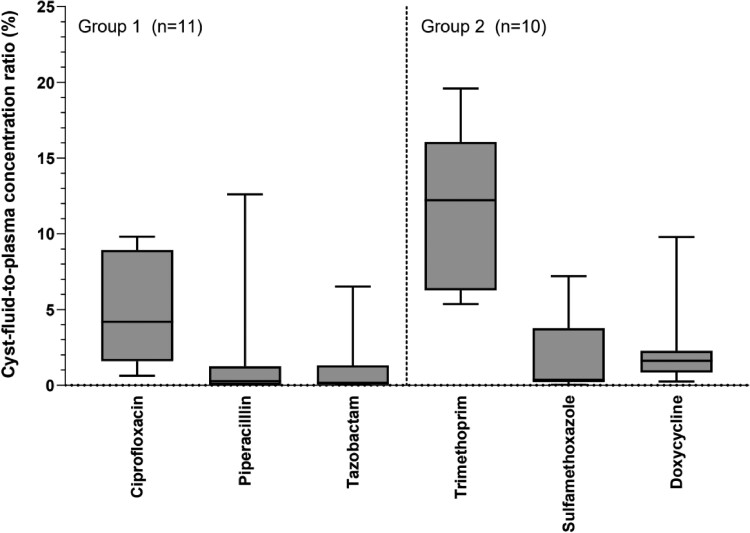
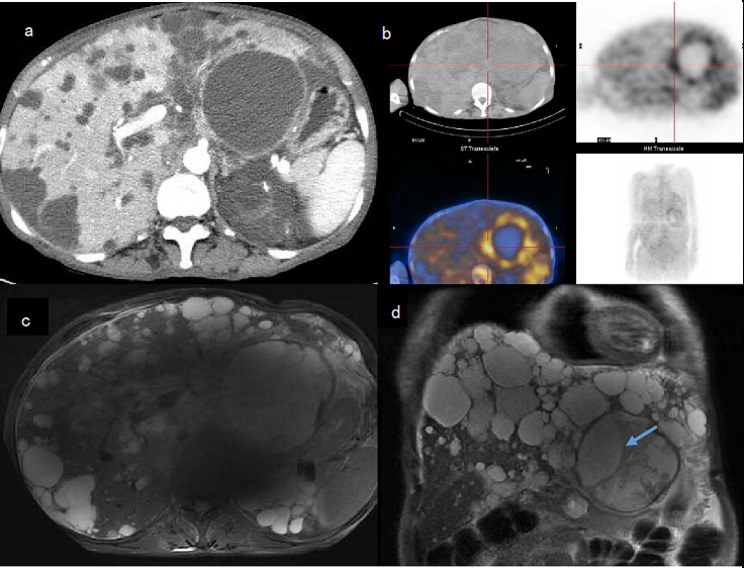

116 — Nhiễm trùng nang gan ở người ghép thận: chỉnh ức chế miễn dịch, tương tác thuốc & dự phòng tái phát / Liver cyst infection in kidney transplant recipients
Tags: pattern:nang-phuc-tap vung:gan vung:than protocol:PET-CT-nang-gan protocol:chinh-uc-che-mien-dich
Mức chắc chắn (certainty): tổng hợp y văn (literature synthesis) — nhóm tự biên từ loạt 296 người ghép thận ADPKD (Kidney Int Rep 2022), thử nghiệm dược động học xâm nhập nang gan (J Antimicrob Chemother 2025), meta-analysis PET/CT (Diagnostics 2024) và tổng quan tương tác thuốc kháng sinh (Rev Esp Quimioter 2024); không gắn một ca nguyên văn duy nhất.
1. Tổng quan bệnh học – cơ chế hình ảnh
- Nối tiếp bài 104: bài 104 phủ chẩn đoán nhiễm trùng nang gan trong gan đa nang (PLD); bài này phủ bối cảnh ghép thận — nơi câu hỏi thực hành không còn là "có nhiễm nang không" mà là giữ hay chỉnh ức chế miễn dịch (immunosuppression — IS), chọn kháng sinh nào vào được nang, và bao lâu.
- Dịch tễ (loạt 296 người ghép thận ADPKD, theo dõi trung vị 4 năm [2–7]): 21 bệnh nhân / 22 đợt nhiễm trùng nang; tỷ lệ tích lũy 3% (1 năm) – 6% (5 năm) – 12% (10 năm); > 1/3 số đợt xảy ra trong năm đầu sau ghép — đúng giai đoạn IS mạnh nhất (PMC9039903). Tỷ lệ này gần bằng người không ghép (~1/100 người–năm, dẫn trong bài gốc) → ghép thận không làm bùng nổ nhiễm nang, nhưng làm ca bệnh khó hơn vì triệu chứng bị che lấp.
- Yếu tố nguy cơ duy nhất có ý nghĩa: tiền sử nhiễm trùng nang TRƯỚC ghép — HR 3,47 (95% CI 1,29–9,31; P = 0,014). Ngược với trực giác, không liên quan: thymoglobulin khởi đầu, phác đồ không corticoid, phơi nhiễm corticoid ≥ 1 năm (PMC9039903) → không thể "đoán" ca nguy cơ từ mức IS; phải hỏi tiền sử nhiễm nang.
- Vì sao nang bị nhiễm: biểu mô lót nang kiểu biểu mô đường mật tiết dịch, nang là khoang kín không thông với tuần hoàn; vi khuẩn từ đường tiêu hóa (túi thừa, viêm ruột) hoặc can thiệp đường niệu–mật vào dịch tù đọng → viêm thành nang + ứ mủ. Hệ quả dược lý: muốn khỏi phải có nồng độ kháng sinh tự do trong dịch nang vượt MIC — mà đây chính là điểm yếu nhất của điều trị.
- TẠI SAO kháng sinh khó vào nang (số liệu, không phải cảm tính): thử nghiệm PK ngẫu nhiên trên 20 bệnh nhân / 21 nang gan KHÔNG nhiễm (thể tích nang trung vị 700 mL, thời gian truyền → chọc hút 139 phút [120–188]), tỷ lệ nồng độ dịch nang / huyết tương:
| Kháng sinh | Tỷ lệ vào dịch nang (trung vị, IQR) |
|---|---|
| Trimethoprim | 12,2% (6,3–16,1) |
| Ciprofloxacin | 4,2% (1,6–8,9) |
| Doxycycline | 1,6% (0,9–2,3) |
| Sulfamethoxazole | 0,4% (0,2–3,8) |
| Piperacillin | 0,3% (0,0–1,3) |
| Tazobactam | 0,2% (0,0–1,3) |
Nguồn: PMC11695873 (CC BY 4.0). Đọc đúng: đây là nang không viêm ở người không nhiễm — màng nang viêm có thể thấm hơn, nên số này là cận dưới/tham chiếu tương đối, không phải nồng độ tuyệt đối trong ca nhiễm. Nhưng thứ hạng rất ổn định và khớp thực hành: beta-lactam (piperacillin/tazobactam) gần như không vào nang (0,2–0,3%), trong khi ciprofloxacin gấp ~14 lần và trimethoprim gấp ~40 lần piperacillin. Đây là lý do EASL coi fluoroquinolone (FQ) uống hoặc cephalosporin thế hệ 3 IV là first-line, và là lý do thất bại kháng sinh buộc leo thang điều trị ở 48% ca (dẫn trong PMC11695873).
- TẠI SAO PET/CT dương còn CT thì âm: bạch cầu trung tính trong thành và dịch nang đường phân mạnh → tích ¹⁸F-FDG; màng nang mỏng, không có mô mạch máu, lại nằm cạnh hàng chục nang khác cùng đậm độ → CT không có gì để bắt. Trong loạt ghép thận: siêu âm gợi ý 3/19 (16%), CT 5/12 (33%), PET/CT 14/16 (87%) (PMC9039903). Gộp 10 nghiên cứu / 282 lần chụp: Se 84,6% (75,4–90,7), Sp 94,9% (72,6–99,2), và PET đổi xử trí ở hơn nửa bệnh nhân (PMC11312050).
- TẠI SAO người ghép biểu hiện "nghèo nàn": sốt đơn thuần 23%, dấu hiệu không điển hình 32% (không sốt hoặc chỉ sốt mà không đau); 55% có tổn thương thận cấp (AKI) — vừa do nhiễm trùng, vừa do ức chế calcineurin (CNI) + giảm thể tích; 14% sốc nhiễm trùng. Vị trí: thận gốc 63%, gan 37%; thể gan gặp ở người lớn tuổi hơn (64 ± 4 vs 58 ± 7 tuổi, P = 0,023) và nữ nhiều hơn (63% vs 25%, P = 0,043) (PMC9039903).

Tỷ lệ nồng độ dịch nang/huyết tương (%) theo từng thuốc — hộp = IQR, thanh = toàn dải. Nhóm 1 (n = 11 nang): ciprofloxacin, piperacillin, tazobactam; nhóm 2 (n = 10 nang): trimethoprim/sulfamethoxazole, doxycycline. Trimethoprim và ciprofloxacin vào nang tốt nhất; piperacillin/tazobactam gần như bằng 0. Nguồn: Bernts LHP et al., J Antimicrob Chemother 2025 (PMC11695873), CC BY 4.0.2. Mẫu hình + chẩn đoán phân biệt theo vị trí (gamut)
- Mẫu A — "sốt đơn thuần" ở người ghép thận có tiền sử nang: nhiễm trùng nang (gan hoặc thận gốc), nhiễm trùng thận ghép (viêm thận–bể thận), nhiễm CMV/BK, thải ghép cấp, nhiễm trùng ống thông/tĩnh mạch trung tâm, lao.
- Mẫu B — sốt + đau hạ sườn phải: nhiễm trùng nang gan, viêm đường mật, viêm túi mật, áp-xe gan, xuất huyết nang (đau nhiều hơn sốt), viêm túi thừa/sigmoiditis (đau lan, kèm tiêu chảy).
- Mẫu C — sốt + AKI: viêm thận–bể thận thận ghép, độc thận do CNI, giảm thể tích, tắc nghẽn đường niệu, nhiễm trùng nang thận gốc.
- Mẫu D — nang "đậm hơn hàng xóm" trên CT: nhiễm trùng, xuất huyết, nang đạm/mucin, di căn/u nang (hiếm), u nhú trong ống mật (IPNB).
- Mnemonic "GHÉP–NANG": Ghép thận + tiền sử nang (HR 3,47) · Hỏi tiền sử nhiễm nang trước ghép · Ép miễn dịch (sốt đơn thuần 23%) · PET/CT là chốt (Se 84,6%) · Nang nào? (thận gốc 63% / gan 37%) · AKI 55% · Nhiều nang cùng lúc (65%) · Gram âm: E. coli 50%.
- Quy tắc vàng: ở người ghép thận, "sốt không rõ ổ + có nang gan/thận" phải được coi là nhiễm nang cho đến khi PET/CT loại trừ — vì cả siêu âm (16%) và CT (33%) đều quá kém.
3. Bảng so sánh phân biệt (ma trận đối chiếu)
| Thực thể (entity) | Hình ảnh điển hình | Chốt vào (rule-in) | Chốt loại (rule-out) | Gợi ý xác nhận |
|---|---|---|---|---|
| Nhiễm trùng nang gan | Nang đậm độ cao hơn nang bên cạnh (chênh ≥ 10 HU), thành dày, viêm mỡ quanh nang; DWI sáng/ADC thấp; PET: ổ FDG đúng thành/dịch nang | Sốt + CRP > 50 mg/L + ổ FDG khu trú trong nang (PET dương 87% trong loạt ghép) | Nang T1 sáng đồng nhất, không ngấm FDG, CRP bình thường → xuất huyết nang | PET/CT; cấy máu (dương 73% đợt có vi khuẩn); chọc hút nang |
| Nhiễm trùng nang thận gốc | Nang thận gốc thành dày, dịch không đồng nhất; thận gốc teo quanh nang; FDG khu trú | FDG trong nang thận gốc + đau thắt lưng | FDG chỉ ở thận ghép → nghĩ thận ghép | PET/CT; siêu âm định vị; cấy nước tiểu |
| Viêm thận–bể thận thận ghép | Thận ghép to, phù, giảm ngấm thuốc dạng ổ/wedge, ứ nước, dày thành bể thận; FDG lan tỏa nhu mô | Đau vùng ghép + sốt + cấy nước tiểu dương | FDG khu trú trong một nang, nhu mô ghép bình thường → nhiễm nang | Siêu âm/CT; cấy nước tiểu trước kháng sinh |
| Thải ghép cấp (acute rejection) | Thận ghép to, tăng tín hiệu T2/STIR vỏ–tủy, giảm ngấm; không có ổ FDG riêng | Creatinin tăng nhanh + protein niệu + kháng thể donor (DSA) | Có ổ nhiễm rõ + CRP rất cao + đáp ứng kháng sinh → nhiễm trùng | Sinh thiết thận ghép (chốt); DSA; siêu âm Doppler |
| Nhiễm CMV / BK | Thận ghép bình thường hoặc phù nhẹ; không ổ khu trú; tổn thương phổi/ruột kèm theo | PCR CMV/BK dương + sốt kéo dài, bạch cầu giảm | Ổ FDG khu trú trong nang → không phải nguyên nhân chính | PCR định lượng; nội soi đại tràng nếu tiêu chảy |
| Viêm đường mật / sỏi mật | Giãn ống mật trong gan, dày thành ống mật, sỏi; không có nang thủ phạm | Giãn mật + vàng da + tam chứng Charcot | Không giãn mật, có ổ nang rõ → nhiễm nang | MRCP; ERCP khi cần giải áp |
| Viêm túi thừa / sigmoiditis | Dày thành đại tràng sigma, viêm mỡ quanh ruột, dịch/khí ngoài lòng ruột; FDG ở thành ruột | Đau hố chậu trái + tiêu chảy + FDG thành đại tràng | FDG trong nang gan, đại tràng bình thường | CT bụng; nội soi sau khi khỏi (4 ca trong loạt được soi: 2 polyp, 1 túi thừa) |
| Xuất huyết nang | CT 30–100 HU, không ngấm; T1 sáng, không mất tín hiệu fat-sat; không ngấm FDG | Đau + Hb giảm, CRP thấp/không sốt | FDG dương + sốt + CRP cao → nhiễm trùng | MRI T1 ± fat-sat; so phim cũ; không chọc khi nghi xuất huyết đang hoạt động |
| Áp-xe gan (không do nang) | Ổ dịch có vỏ ngấm thuốc, khí trong ổ, viêm mỡ; không nằm đúng vị trí nang cũ | Vỏ ngấm thuốc + khí + sốt cao | Không vỏ ngấm, đúng vị trí nang → nhiễm nang | Chọc hút dưới hướng dẫn, cấy |

(a) CT thì động mạch: nang lớn thùy trái không ngấm thuốc — không phân biệt được với nang lành; (b) PET/CT: ngấm FDG nhẹ ở thành nang (ô phải trên: PET, dưới: ảnh hợp); (c) MRI T2 axial và (d) T2 coronal: nang 8,9 × 8,8 × 9,0 cm, tín hiệu không đồng nhất, mũi tên xanh chỉ vách/dịch lợn cợn. Bài học: CT âm tính không loại trừ; PET là bước tiếp theo. Nguồn: Xu S et al., BMC Nephrol 2024 (PMC10919048), CC BY 4.0 — ca không ghép thận (dùng minh họa hình thái).4. Protocol chụp + phân tầng điều trị
Chuỗi hình ảnh (theo câu hỏi, không theo giá tiền):
- Siêu âm bụng: rẻ, đầu tay, nhưng trong gan/thận đa nang gần như vô dụng để định vị nang thủ phạm (16% trong loạt ghép).
- CT bụng có cản quang 3 thì, lát 1–2 mm: loại u đặc ngấm thuốc, tìm khí, vách, thành dày, viêm mỡ quanh nang; nhớ CT chỉ gợi ý 33%.
- MRI gan/thận (T1 in/out-phase, T1 fat-sat, T2, DWI/ADC, thì muộn): phân biệt mủ (DWI sáng/ADC thấp) với máu cũ (T1 sáng, không hạn chế khuếch tán); không cần gadolinium nếu chỉ cần DWI (bảo vệ thận ghép).
- ¹⁸F-FDG PET/CT — chốt định vị: nhịn ăn ≥ 6 giờ, glucose máu < 11 mmol/L, đọc sau 60 phút; tiêu chuẩn dương: ngấm thành hoặc trong nang cao hơn nhu mô xung quanh. Giá trị: Se 84,6% / Sp 94,9%; hạn chế: viêm quanh nang, mô ghép viêm, ổ nhiễm khác, sau chọc/dẫn lưu → dương tính giả.
- Chọc hút / dẫn lưu qua da: vừa chẩn đoán (nhuộm Gram, cấy, tế bào) vừa điều trị; ưu tiên nang lớn, nông, dễ tiếp cận; trong loạt ghép chỉ 1/22 đợt (5%) phải dẫn lưu.
Điều trị (số liệu từ loạt 22 đợt, PMC9039903):
- Kháng sinh: beta-lactam đơn thuần 27%, FQ đơn thuần 36%, phối hợp 37%; thời gian trung bình 33 ± 11 ngày. Khuyến cáo EASL/KDIGO được các bài gốc trích: ≥ 4 tuần, kéo dài tùy đáp ứng (bài 104: ≥ 14 ngày bảo vệ thất bại/tái phát sớm, OR 0,03; ≥ 28 ngày bảo vệ tái phát 12 tháng, OR 0,12).
- Chọn thuốc theo dữ liệu xâm nhập nang: ciprofloxacin hoặc trimethoprim/sulfamethoxazole là lựa chọn hàng đầu về mặt dược động học (4,2% và 12,2%); piperacillin/tazobactam 0,2–0,3% → không dùng đơn độc cho nhiễm nang, chỉ dùng khi có ổ nhiễm ngoài nang/đang chờ cấy.
- Kết cục: thất bại điều trị 27%, đổi kháng sinh 27%, dẫn lưu 5%, cắt thận 5%, tái phát sớm (< 3 tháng) 9%.
- Thận ghép: nhiễm trùng nang liên quan tới mất thận ghép (24% vs 5%; HR 3,93 [1,21–12,80]) nhưng tác giả không xác lập được nhân quả — trong đa số ca mất ghép có nguyên nhân khác (thải ghép thể dịch sau giảm IS, nhiễm nặng khác, suy thận trước đó). Đừng đọc con số này thành "phải cắt thận".
Chỉnh ức chế miễn dịch — nguyên tắc thực hành (quan trọng nhất của bài):
- Trong loạt, chỉ 2/21 bệnh nhân (9%) được giảm IS — tức là đa số nhiễm nang được điều trị mà KHÔNG giảm IS. Đây là điểm khác biệt so với nhiễm trùng nặng có sốc.
- Giảm IS không miễn phí: 2 ca mất thận ghép trong loạt xảy ra sau khi giảm/ngừng IS (một ca thải ghép thể dịch sau đợt legionellosis nặng, một ca sau khi ngừng IS vì P. jirovecii) → hạ IS là can thiệp có giá.
- Ngưỡng đề xuất (suy luận từ dữ liệu trên, không phải guideline): giữ nguyên IS khi bệnh nhân ổn định huyết động, đáp ứng lâm sàng trong 48–72 giờ; giảm bậc thang (bỏ antimetabolite trước, giữ CNI ở nồng độ đáy thấp–trung bình) khi sốc nhiễm trùng, không kiểm soát sau 72 giờ, hoặc phải mổ/dẫn lưu lớn; không ngừng CNI đột ngột.
Tương tác thuốc — đọc đúng mức độ (PMC11231487):
| Cặp tương tác | Mức độ theo bằng chứng | Việc phải làm |
|---|---|---|
| Ciprofloxacin + tacrolimus/cyclosporine | Nhẹ ("mild") — cipro chỉ là ức chế CYP3A4 yếu + P-gp yếu (minor); báo cáo tăng creatinin thoáng qua với cyclosporine, một số ca không đổi dược động học | Không giảm liều trước; đo nồng độ tacrolimus (C0) sau 3–5 ngày và khi ngừng; theo dõi creatinin |
| Clarithromycin / erythromycin + CNI | Nặng — AUC/Cmax của CNI tăng 3–10 lần | Giảm 50% liều CNI + đo nồng độ hằng ngày |
| Levofloxacin + cyclosporine | Trung bình — Cmax +23%, AUC +26% | Theo dõi chức năng thận, nhất là liều 500 mg mỗi 12 giờ |
| Ciprofloxacin (CYP1A2) | Ức chế trung bình CYP1A2 | Tránh/giảm liều theophylline, tizanidine, clozapine, olanzapine; cảnh giác QT |
Phản biện (fidelity): niềm tin phổ biến "ciprofloxacin làm tăng vọt tacrolimus" không được dữ liệu ủng hộ mạnh — cipro yếu hơn macrolid rất nhiều. Nhưng vì tacrolimus có cửa sổ điều trị hẹp, và vì cùng lúc bệnh nhân đang nhiễm trùng + có thể mất nước, vẫn phải đo nồng độ — lý do là nguy cơ tổng hợp, không phải vì cipro là "thuốc tương tác mạnh".
flowchart TD
A[Người ghép thận + sốt ≥ 38,5 °C hoặc CRP > 50 mg/L] --> B[Siêu âm + CT bụng 3 thì lát 1–2 mm]
B --> C{Có ổ nang thủ phạm rõ, không nghi u đặc?}
C -->|Có| D[Cấy máu + cấy nước tiểu trước kháng sinh]
C -->|Không| E[MRI có DWI/ADC + 18F-FDG PET/CT]
E --> F{PET khu trú đúng nang?}
F -->|Có| D
F -->|Không| G[Tìm ổ khác: thận ghép, CMV/BK, thải ghép, đường mật, đại tràng]
D --> H[Kháng sinh vào nang tốt: ciprofloxacin hoặc TMP-SMX, ≥ 4 tuần]
H --> I{Đáp ứng sau 48–72 giờ?}
I -->|Có| J[Giữ nguyên ức chế miễn dịch + đo nồng độ tacrolimus]
I -->|Không| K[Dẫn lưu nang + xem lại kháng sinh theo cấy]
K --> L{Sốc nhiễm trùng hoặc không kiểm soát?}
L -->|Có| M[Giảm bậc thang: bỏ antimetabolite, giữ CNI đáy thấp]
L -->|Không| J
J --> N[Theo dõi CRP + creatinin; tái phát 9% trong 3 tháng]
5. Biến thể bình thường và cạm bẫy
- CT âm tính KHÔNG loại trừ: trong một loạt, CT âm tính 7/7 đợt; trong loạt ghép chỉ gợi ý 33%. "CT sạch" ở người ghép thận có nang là chỉ định PET/CT, không phải lý do dừng lại.
- FDG dương giả: viêm quanh nang, mô ghép thận viêm, ổ nhiễm khác (sigmoid, ống thông), sau chọc/dẫn lưu (viêm thứ phát), và nang vừa xuất huyết (đại thực bào hoạt hóa). Luôn đối chiếu đúng nang trên CT/MRI, không đọc PET "trần".
- Nhầm xuất huyết nang với nhiễm trùng: xuất huyết cho T1 sáng, không hạn chế khuếch tán, không ngấm FDG, CRP thường thấp; chọc hút lúc đang xuất huyết làm nặng thêm.
- Giảm IS theo phản xạ = bẫy: 2 ca mất thận ghép trong loạt xảy ra sau khi giảm/ngừng IS. Giữ IS ở bệnh nhân ổn định là quyết định có bằng chứng, không phải "thiếu quyết đoán".
- AKI ở người ghép không đồng nghĩa nhiễm trùng: CNI + giảm thể tích + thuốc cản quang là bộ ba thường gặp; đừng quy hết cho nang.
- Fluoroquinolone dài ngày có giá: ca 68 tuổi chạy thận, levofloxacin 2 tuần vì nhiễm nang gan → đau cổ chân, giảm khả năng đi lại (viêm gân do FQ); nhiễm nang tái phát 4 tuần sau ngừng kháng sinh (PMC11385687). Với người ghép, cân nhắc thêm tendinopathy khi kéo dài FQ > 2–3 tuần.
- Satisfaction of search: 65% các đợt có nhiều nang nhiễm cùng lúc (bài 104) — dẫn lưu 1 nang rồi "yên tâm" là bỏ sót ổ thứ hai.
- Không quên ổ nguyên phát: E. coli chiếm 50%; 4 ca được nội soi đại tràng (2 polyp, 1 túi thừa). Nhiễm nang tái phát = tìm túi thừa/ổ tiêu hóa, không chỉ đổi kháng sinh.
6. Tự lượng giá — Blind Quiz
Ca 1 — Nam 61 tuổi, ghép thận 5 năm vì ADPKD, sốt 38,6 °C 4 ngày, không đau bụng, creatinin tăng 30%. CRP 161 mg/L.
- Hỏi: (1) Trên CT, nang lớn thùy trái có gì bất thường? (2) Vì sao CT dễ âm tính? (3) Ba chẩn đoán phân biệt và bước hình ảnh tiếp theo?
Bấm để hiện đáp án (findings + chẩn đoán)
- Findings: (a) CT thì động mạch — nang lớn không ngấm thuốc, thành không rõ; (b) PET/CT — ngấm FDG nhẹ ở thành nang, cao hơn nhu mô gan xung quanh; (c) (d) MRI T2 — nang 8,9 × 8,8 × 9,0 cm, tín hiệu không đồng nhất, có vách.
- Chẩn đoán: nhiễm trùng nang gan ở người ghép thận. Vì sao: màng nang không có mạch máu nên CT không có mô để bắt; bạch cầu trong thành/dịch nang đường phân mạnh nên PET dương (Se 84,6%).
- Phân biệt: viêm thận–bể thận thận ghép, thải ghép cấp, nhiễm CMV/BK, viêm đường mật, xuất huyết nang (T1 sáng, không FDG).
- Bước tiếp: cấy máu + cấy nước tiểu → ciprofloxacin hoặc TMP-SMX ≥ 4 tuần; giữ nguyên IS, đo nồng độ tacrolimus; dẫn lưu nếu không đáp ứng 48–72 giờ.
- Nguồn ảnh: Xu S et al., BMC Nephrol 2024 (PMC10919048), CC BY 4.0 — ca không ghép thận, dùng minh họa hình thái.
Ca 2 — Nữ 64 tuổi, ghép thận 3 năm, nhiễm trùng nang gan do E. coli. Ngày 5 đang dùng piperacillin/tazobactam, vẫn sốt 39 °C, CRP tăng.
- Hỏi: Nhìn biểu đồ, vì sao phác đồ hiện tại khó khỏi? Nên đổi sang đâu và cần theo dõi gì?
Bấm để hiện đáp án
- Findings: piperacillin 0,3% (0,0–1,3) và tazobactam 0,2% (0,0–1,3) nồng độ dịch nang/huyết tương — gần như không vào nang; ciprofloxacin 4,2%, trimethoprim 12,2%.
- Kết luận: thất bại không phải do "kháng thuốc" mà do không đạt nồng độ tại ổ — đúng cơ chế đã làm 48% ca thất bại kháng sinh phải leo thang.
- Xử trí: đổi sang ciprofloxacin (theo kháng sinh đồ) hoặc TMP-SMX; tiếp tục ≥ 4 tuần tính từ lúc kiểm soát; cân nhắc dẫn lưu nang nếu sốt kéo dài; đo nồng độ tacrolimus sau 3–5 ngày (cipro ức chế CYP3A4 yếu) và theo dõi gân nếu kéo dài FQ.
- Caveat: số liệu trên nang không nhiễm → dùng để so sánh tương đối giữa các thuốc, không phải nồng độ tuyệt đối.
- Nguồn: Bernts LHP et al., J Antimicrob Chemother 2025 (PMC11695873), CC BY 4.0.
Bài liên quan chéo
- 104 – Nhiễm trùng nang gan trong ADPKD/PLD (khung chẩn đoán + ngưỡng kháng sinh)
- 164 – Nang thận ADPKD & biến chứng (nhiễm/xuất huyết nang thận)
- 157 – Bệnh thận đa nang ADPKD/ARPKD
- 189 – Đánh giá trước ghép thận ở bàng quang thần kinh (bối cảnh người ghép)
- 910 – Dẫn lưu áp-xe, đường mật & thận qua da (kỹ thuật chọc hút/dẫn lưu)
Ảnh
images/116_nang-gan-nhiem-trung_CT-PET-MRI_PMC10919048.jpg— CT/PET/MRI, CC BY 4.0 (PMC10919048, ca không ghép thận).images/116_xam-nhap-khang-sinh_Bar_PMC11695873.jpg— biểu đồ xâm nhập kháng sinh, CC BY 4.0 (PMC11695873).- Nguồn + giấy phép từng ảnh:
images/CREDITS.md.
Không dùng để chẩn đoán độc lập khi chưa có người hướng dẫn.